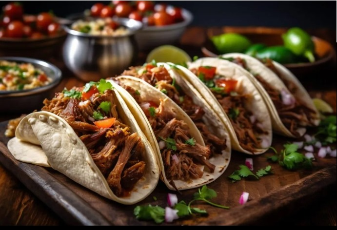

Grilled Crispy Pork with Steamed Rice
Grilled crispy pork served with fluffy steamed rice, offering a perfect balance of savory and satisfying flavors

Steak Tacos with basil and Lemon
Steak Tacos with Basil and Lemon offer a fresh and vibrant twist, combining juicy steak with fragrant basil and zesty lemon for a flavorful, aromatic bite.

Butter Chicken
Butter Chicken in a pan is a rich, creamy dish where tender chicken simmers in a buttery, spiced tomato sauce, delivering bold flavors in every bite.
Sushi Rolls
Indulge in our Sushi Rolls, where creamy avocado meets succulent salmon, wrapped in tender rice for a mouthwatering experience!